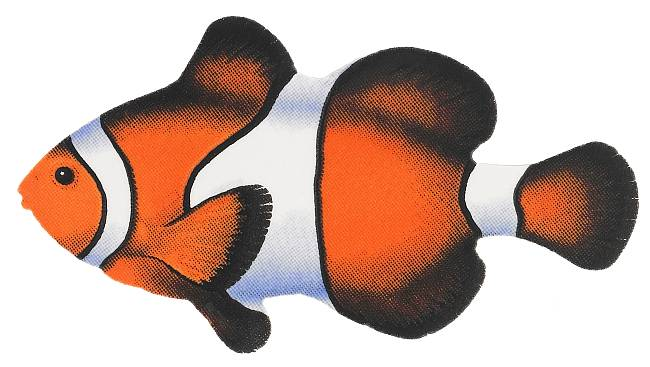

- 

I am the type of person that wants to learn everything I can about anything because I truly belive that knowledge is power. I like to get things done in a timely manner and I make sure I do them to the best of my ability. This picture below is a a webpage that I created for my fraternity. It is a simply home page but it is well put together and accomplishes the goal I set forth to achieve.